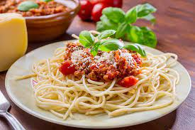

Bolognese Spaghetti

Description
Unlike marinara sauce, bolognese is light on the tomato. The fruit is typically used in the form of a paste, adding sweet notes to the otherwise savory, protein-packed gravy. Perfect for meat lovers, the sauce includes ground beef, veal, or pork,
stewed in a mixture of wine, milk, celery, carrot, and the tomato paste.
Superb! Yum! Yum!
Ingredients
- Fresh Tomatoes
- Sauce
- Spaghetti
Steps
- Bring to a boil. Reduce the heat to medium-low and gently simmer uncovered until the sauce is slightly thickened, about 20 minutes
- Meanwhile, bring a large pot of salted water to a boil.
- Add 1 pound dried spaghetti and cook for 1 minute less than the package instructions for al dente, about 9 minutes.